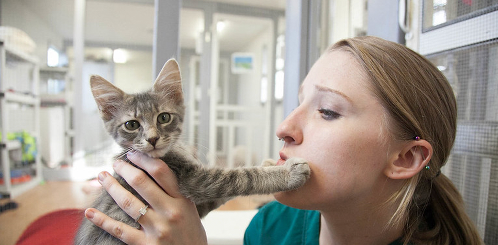

Welkom bij De Groene Kattenvloot, de gids voor iedereen die overweegt een kat uit het asiel te adopteren. Hier vind je alle informatie die je nodig hebt om een weloverwogen keuze te maken en een nieuw thuis te bieden aan een kat die op je wacht. Door te kiezen voor een asielkat geef je een dier een tweede kans, en maak je een bewuste keuze die bijdraagt aan dierenwelzijn.
Waarom een (oudere) kat uit het asiel in plaats van een poes van de fokker? Op onze website leggen we uit waarom het vaak een duurzamere en liefdevollere optie is om een volwassen kat te adopteren.
Daarnaast bieden we een overzicht van verschillende asielen in Amsterdam, zodat je makkelijk kunt zien waar je terecht kunt om jouw nieuwe huisgenoot te ontmoeten. Of je nu al ervaring hebt met katten of voor het eerst een kat wilt adopteren, De Groene Kattenvloot helpt je op weg!
Adoptie
Een tweede kans op geluk
Het adopteren van een kat uit een asiel is een prachtige manier om een dier een tweede kans te geven. Veel katten in asielen zijn gered uit moeilijke situaties en verdienen een warm, liefdevol thuis. Op deze pagina nemen wij de voordelen met je door waarom een kat adopteren beter en duurzaam is.
Ervaring
Asielkatten hebben meer levenservaring dan kittens. Bij jonge katten weet je nog niet hoe ze zich ontwikkelen. Oudere (asiel)katten hebben al hun eigen persoonlijkheid gevormd. Je krijgt bij de eerste ontmoeting meteen al een goed beeld wat je kan verwachten van je eventuele gezelschapsdiertje
Gezondheid
Bij het adopteren weet je meteen waar je qua gezondheid aan toe bent met je nieuwe vriendje. Je weet vaak van te voren al of het dier eventule medicijnen nodig heeft. Ook zijn de asielkatten al van te voren gevaccineerd. Dat kan op lange termijn kosten besparen.
Misvattingen
Er bestaan verschillende misvattingen over asielkatten. Een opvatting die veel voorkomt is dat asielkatten probleemgedrag zouden hebben. In de werkelijkheid komen veel katten in het asiel terecht door redenen zoals: verhuizing, financiële omstandigheden, allergieën of overlijden van de vorige eigenaar. Dat zijn redenen die vaak niks met het karakter of gezondheid van de kat te maken hebben. Daarnaast komen asielkatten in alle leeftijden voor, van kittens tot oude zielen.
Door deze vooroordelen te ontkrachten hopen wij meer katten de kans te kunnen geven om geliefd en gewaardeerd te worden. Asielmedewerkers leren de katten goed kennen, waardoor er beter ingeschat kan worden welke kat bij welke persoon past.
Postitieve impact
Door te adopteren maak je een directe impact op het leven van de dieren. Katten uit het asiel hebben vaak al veel meegemaakt. Het is daarbij fijn om een kat een nieuwe kans te geven. Met een adoptie help je bovendien de overbevolking van de asielen te verminderen, wat weer ruimte creëert voor de dieren die het nodig hebben.
Praktisch
Als je net een asielkat in huis haalt is het belangrijk om te zorgen voor een juiste en veilige omgeving. Geduld is daarbij essentieel; sommige katten vragen de nodige tijd om zich aan te passen aan hun nieuwe omgeving. Bouw het vertrouwen op door kalm te zijn en de kat zijn ruimte te geven om zich terug te trekken.
Daarnaast is het belangrijk om het nieuwe huis 'kat-proof' te maken door gevaarlijke items, zoals giftige planten en losse kabels, buiten bereik te houden. Uiteraard is het ook nodig om een kattenbak, voer en de nodige speeltjes in huis te halen. Verder heeft elke kat behoefte aan een hoge plek, zoals een krabpaal of plank, van waaruit hij de kamer kan overzien. Deze details helpen niet alleen om een veilige, maar ook een stimulerende omgeving te creëren voor je nieuwe gezinslid.
Kosten
De meesten asielen vragen gemiddel 100 tot 200 euro voor een kat. Met die prijs zijn de dierenarts- en verzorgingskosten gedekt voor het asiel. De kat is daarbij ook meteen gevaccineerd, gechipt, (eventueel) gecastreerd en hebben een dierenpaspoort. Dat kan wel per asiel verschillen. Het is handig om dat van te voren te dubbel checken bij de medewerkers.
Locaties
DOA
Dieren Opvang Amsterdam is een organisatie die zich inzet voor het opvangen, verzorgen en herplaatsen van dieren die hulp nodig hebben. Ze bieden een veilig onderkomen voor honden, katten en andere huisdieren die zijn achtergelaten of niet langer door hun baasjes kunnen worden verzorgd. Naast het bieden van onderdak, zorgt de opvang ook voor medische zorg en socialisatie van de dieren, zodat ze een grotere kans hebben op een nieuw thuis. Bij deze opvang zijn meerdere katten opzoek naar een nieuwe verblijfplaatst. Via hun website zijn foto's van de verschillende katten te vinden.
De Poezenboot
De Poezenboot biedt een bijzondere kans voor Amsterdammers die op zoek zijn naar een kat. Op deze drijvende opvang in de gracht wachten katten die een liefdevol thuis zoeken op adoptie. De vrijwilligers zorgen ervoor dat elke kat gezond en sociaal is, zodat ze klaar zijn voor hun nieuwe plek. Naast adoptie kun je er ook op afspraak een bezoek brengen, waarbij donaties altijd welkom zijn. Meer informatie over adoptieprocedures is te vinden op hun website.
Dierenasiel Oostzaan
Bij Dierenasiel Oostzaan kunnen inwoners van Amsterdam en omstreken een kat adopteren die op zoek is naar een nieuw thuis. Het asiel zorgt ervoor dat de katten gezond en klaar voor adoptie zijn, en helpt je bij het vinden van een goede match. Voor de veiligheid vraagt het asiel om een beschermde leefomgeving, zoals een afgezette tuin of balkon. Bezoeken zijn op afspraak mogelijk, en het team staat klaar om je te ondersteunen in het adoptieproces.